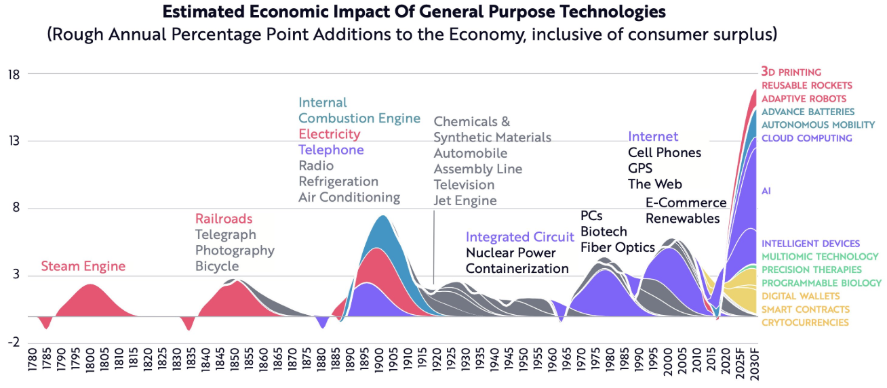
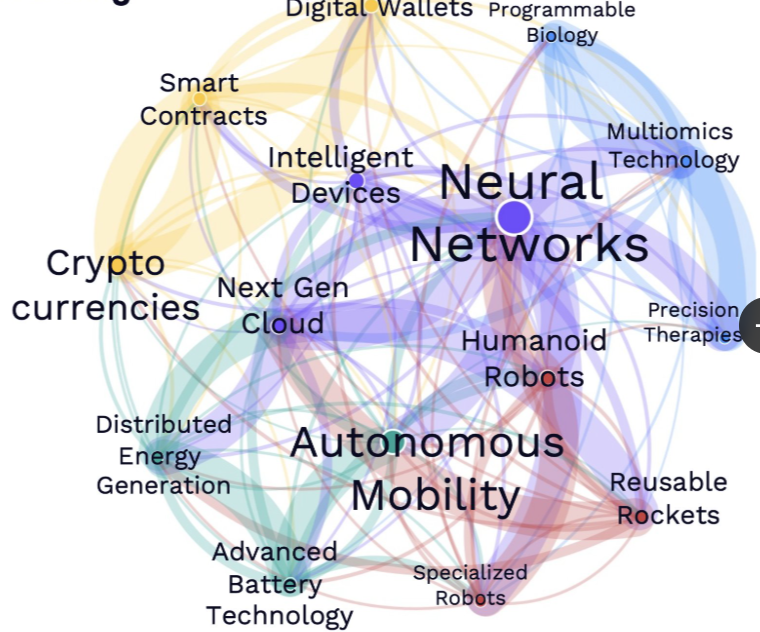
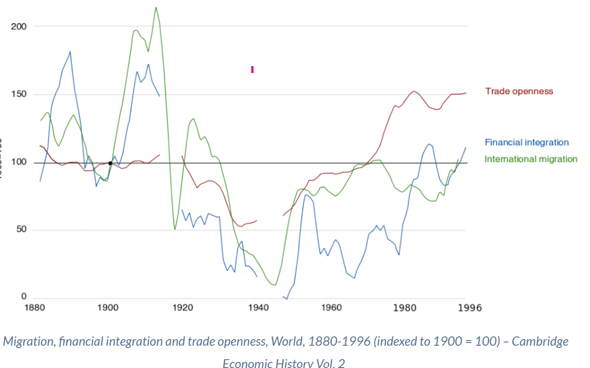
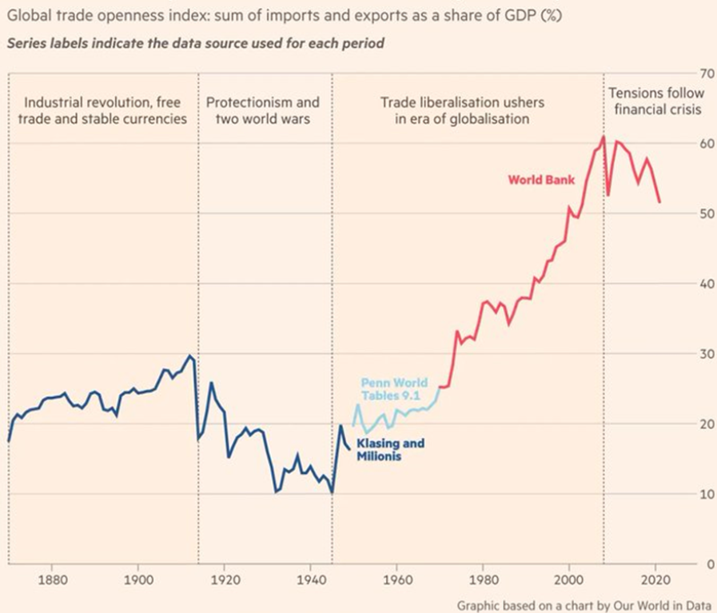
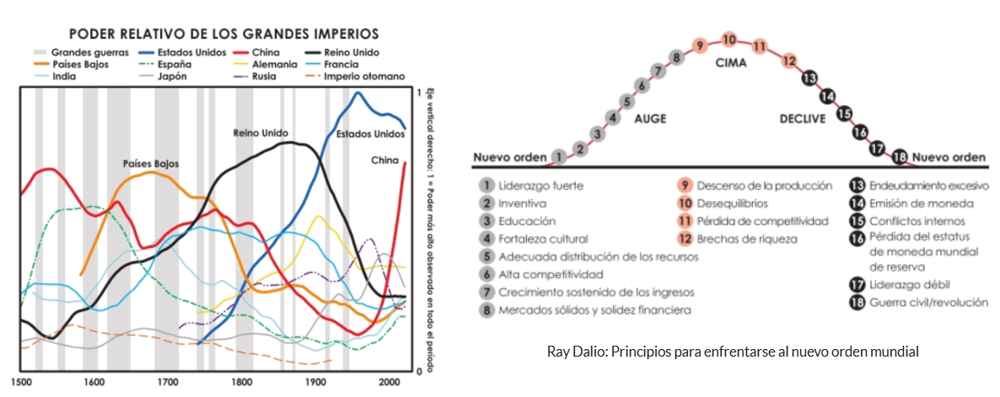
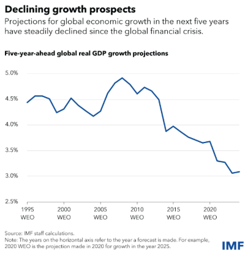

Theory
Selección de inventos realizada por ChatGPT
 |
 |
| Source:ARK Investment Management LLC |
Topics:
Growth
Convergence Clubs: Convergence clubs refer to groups of countries or regions that exhibit similar economic characteristics and tend to converge towards a common steady-state in terms of income or productivity. These clubs highlight that convergence is not always a universal phenomenon; instead, subsets of economies with shared attributes may converge among themselves.
https://www.chat-gdp.org/we-were-wrong-about-convergence/
Regional, Functional, and Personal Income Distribution:
Regional Distribution: Examines income disparities across different geographical areas, such as countries, states, or municipalities. This perspective is essential for identifying convergence or divergence trends among regions. Functional Distribution: Focuses on how income is allocated among factors of production, typically labor and capital. It analyzes the share of income going to wages versus profits, shedding light on the economic structure and potential shifts over time. Personal Distribution: Looks at how income is distributed among individuals or households within a particular region or economy, providing a micro-level view of inequality.
Inequality
Gini Coefficient: The Gini coefficient is a widely used measure of income inequality within a population. It ranges from 0 to 1, where 0 indicates perfect equality (everyone has the same income) and 1 signifies perfect inequality (one individual has all the income). In convergence analysis, tracking changes in the Gini coefficient over time helps assess whether income disparities are widening or narrowing.
HDI https://hdr.undp.org/data-center/human-development-index#/indicies/HDI
HDR21-22_Statistical_Annex_HDI_Table.xlsx https://view.officeapps.live.com/op/view.aspx?src=https%3A%2F%2Fhdr.undp.org%2Fsites%2Fdefault%2Ffiles%2F2021-22_HDR%2FHDR21-22_Statistical_Annex_HDI_Table.xlsx&wdOrigin=BROWSELINK
Home - WID - World Inequality Database
UNU WIDER : WIID – World Income Inequality Database
WDI - Classifying countries by income.
Structural change: productive structure
Globalization
 |
 |
Solow Model
Other: Milennium and Sustainable Development Goals
2000-2015: Millennium Development Goals (MDG) 1. To eradicate extreme poverty and hunger 2. To achieve universal primary education 3. To promote gender equality and empower women 4. To reduce child mortality 5. To improve maternal health 6. To combat HIV/AIDS, malaria, and other diseases 7. To ensure environmental sustainability 8. To develop a global partnership for development
2015-2030: The 17 sustainable development goals (SDGs) to transform our world: 1- No Poverty 2- Zero Hunger 3- Good Health and Well-being 4- Quality Education 5- Gender Equality 6- Clean Water and Sanitation 7- Affordable and Clean Energy 8- Decent Work and Economic Growth 9- Industry, Innovation and Infrastructure 10- Reduced Inequality 11- Sustainable Cities and Communities 12- Responsible Consumption and Production 13- Climate Action 14- Life Below Water 15- Life on Land 16- Peace and Justice Strong Institutions 17- Partnerships to achieve the Goal
Take Action for the Sustainable Development Goals - United Nations Sustainable Development The Human Rights Guide to the Sustainable Development Goals Atlas of Sustainable Development Goals 2023


Data
Glossary
Practice
Exercise
Write your own Solow Model exercise and solve it.
Read
The Rise and Fall of American Growth: The U.S. Standard of Living Since the Civil War (2016) by Robert J. Gordon.